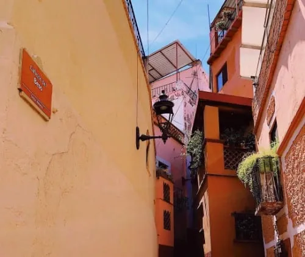

Si hay algo que caracteriza a los lugares turísticos de México son sus rincones llenos de cultura y tradición, y Guanajuato no es la excepción. Conforma uno de los 31 estados de México y es conocido por sus minas, túneles, calles estrechas y casas de colores.
Su capital, la ciudad de Guanajuato, cuyo nombre significa “colina de ranas” en la lengua de los indios tarasco, fue declarada por la UNESCO Patrimonio Cultural de la Humanidad en 1988. Es aquí donde se lleva a cabo el Festival Internacional Cervantino, un evento donde todos los años las artes convergen e invaden las calles de Guanajuato.
La mejor manera de conocer la ciudad de Diego Rivera es caminando, a cada paso de toparás edificios de arquitectura clásica, festivales, gastronomía y leyendas. Y si eres de los aficionados del ecoturismo, despreocúpate porque también tiene increíbles áreas verdes para recorrer. Si no sabes qué destinos turísticos mexicanos visitar, aquí encontrarás información sobre los mejores lugares turísticos de Guanajuato para conocer.
Universidad de GuanajuatoLa Universidad de Guanajuato es uno de los íconos arquitectónicos más atractivos de la ciudad. Está ubicada en el Centro Histórico, fue fundada en 1732, y, aunque edificios que la componen están diseminados por todo el estado, la sede principal es la que se roba la atención de todos los turistas.
Lo que la hace destacar es su fachada neoclásica de cantera verde y la gran escalinata de más de 80 escalones. Aquí encontrarás uno de los mejores lugares turísticos en Guanajuato para tomar fotos y ver una linda vista de la ciudad.
Si la visitas también podrás conocer el Museo de Historia Natural Alfredo Dugés, que se ubica justo al lado. Ten en cuenta que la universidad está en pleno centro, así que lo mejor es llegar caminando
El Callejón del Beso, en el Centro Histórico, es uno de los lugares turísticos de la capital de Guanajuato más visitados. Los muros encierran la trágica historia de amor de Ana, una doncella de alta sociedad y Carlos, un humilde minero.
Los balcones del callejón, que casi pueden tocarse, eran el lugar donde los amantes se reunían a escondidas. Según la leyenda, las parejas que visiten estos espacios turísticos de Guanajuato deben darse un beso para asegurar la buena suerte.
Debes en cuenta que la entrada a los balcones es paga; también recuerda que es un destino muy concurrido y suelen hacerse filas largas para tomarse fotos. En los alrededores encontrarás algunos hoteles y vendedores ambulantes.
